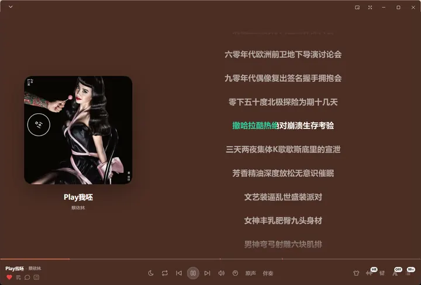
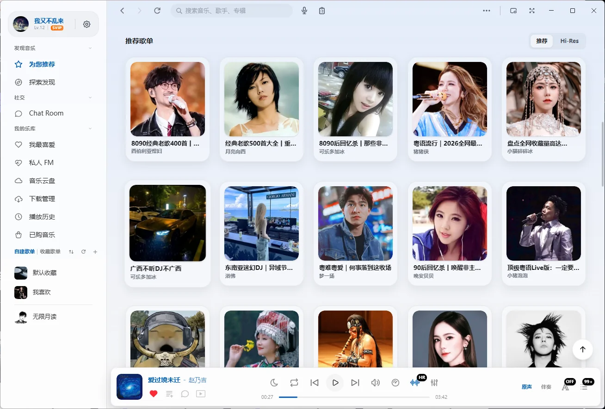
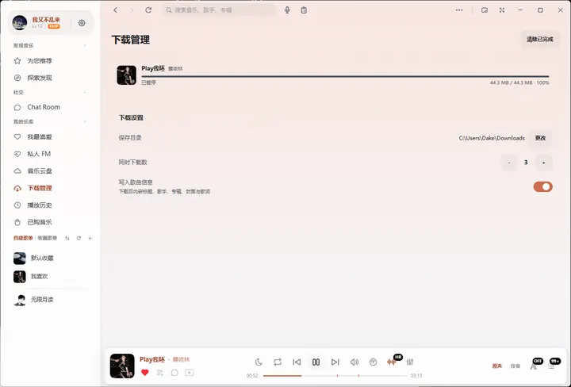
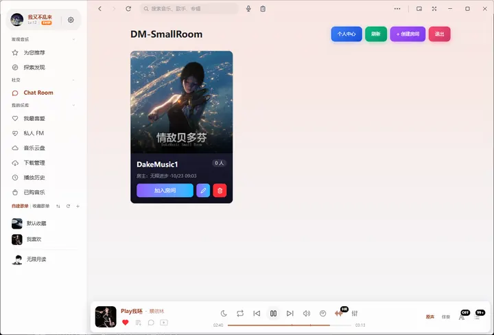
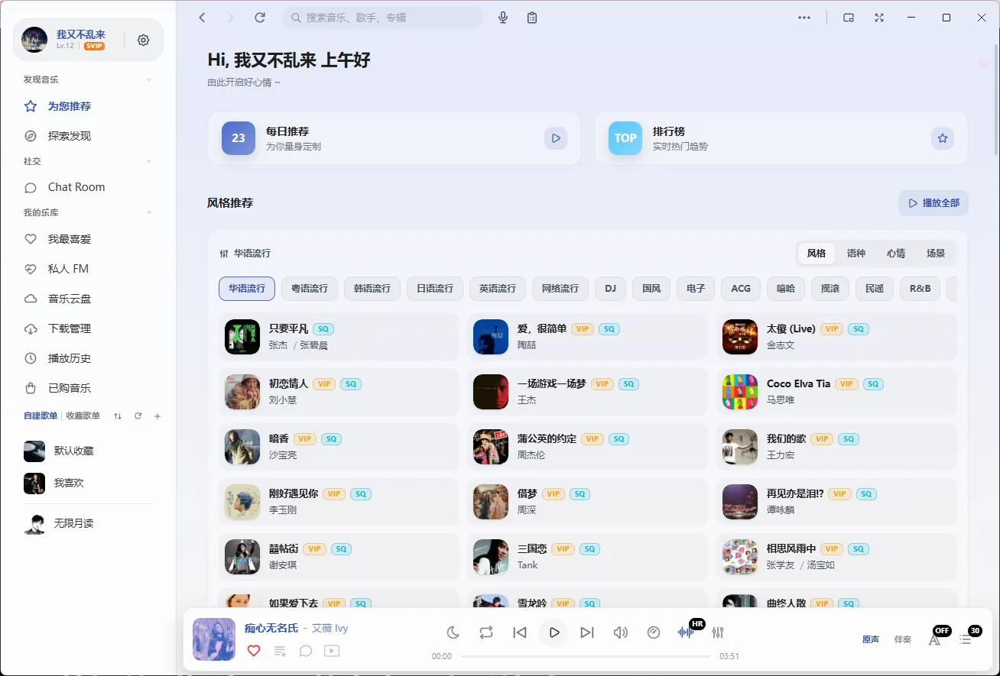
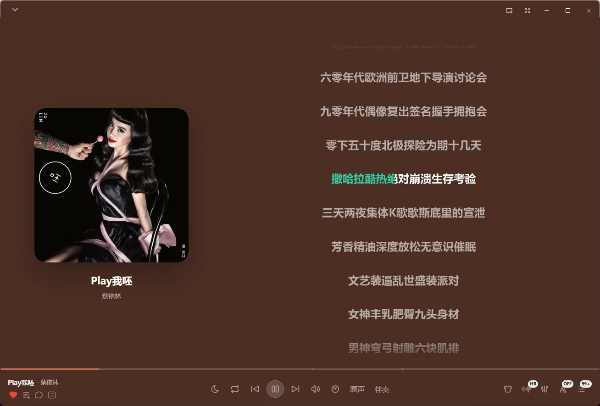
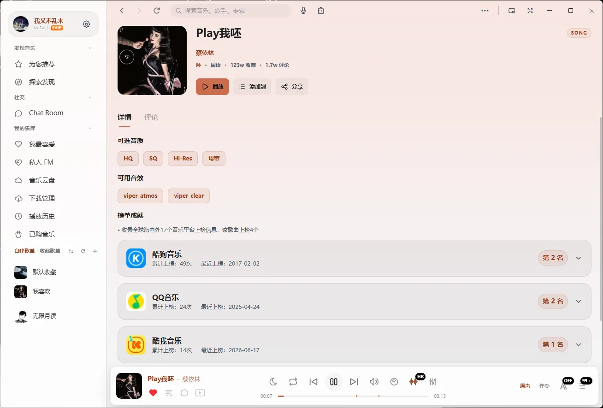
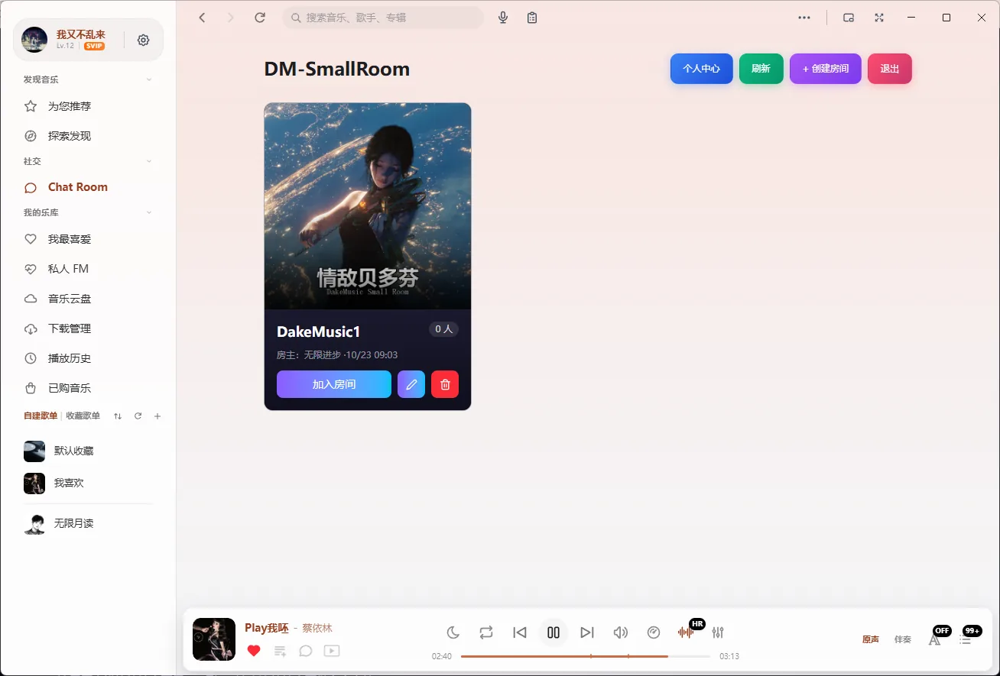

歌词逐字对上
逐字歌词、桌面歌词、封面模式都在。切歌、拖动进度后，行号会重新对齐，不会一直停在上半句。

本地文件、在线曲库、逐字歌词、人声分离，全在一个窗口里。免费开源，装完就能用。

听歌这件事，值得一个认真做的桌面播放器。
不是功能列表堆出来的长表，是把四件常用的事做顺手。
逐字歌词、桌面歌词、封面模式都在。切歌、拖动进度后，行号会重新对齐，不会一直停在上半句。

用本地模型把一首歌拆成人声与伴奏。第一次用需要下载模型，之后在本地算，不上传音频。
内置下载管理，标题、歌手、封面、歌词一起写进文件。断点续传、重名自动编号，目录由你指定。

语聊房支持一起听歌、点歌、上麦和房间公告。七个麦位一行铺满，侧栏展开也不挤。

深色浅色都跟系统主题走，封面颜色会带到界面上。




下载之前最常问的六个问题。
完全免费，没有会员也没有广告。程序以 GPL-3.0 协议开源，任何人都可以自行编译和修改。
目前正式发布的是 Windows 10 与 Windows 11 的 64 位版本。macOS 版本还没有发布安装包，不建议拿别人的包来试。
放本地歌不需要。在线曲库、云端歌单和语聊房需要登录，登录只用于这些联网功能。
不会。本地曲库只读取你添加的文件夹，播放记录和设置存在本机的数据库文件里，删掉应用目录就一起删掉了。
第一次使用需要联网下载模型文件，之后分离都在本机算，音频不会上传到服务器。
应用内会自动检查更新，下载完成后弹出安装提示，也可以随时从下载页取最新安装包覆盖安装。
免费开源，203 MB，Windows 10 与 11 的 64 位系统可以直接装。
如果安装时 Windows 提示「已保护你的电脑」，点「更多信息」再点「仍要运行」。